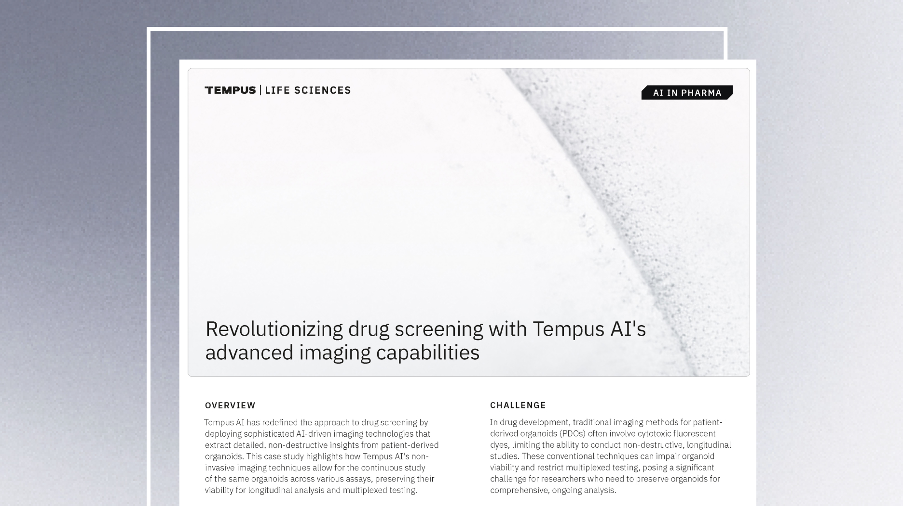

Uncover deeper insights regarding tumor heterogeneity, resistance mechanisms, and interaction within the tumor microenvironment to support targeted development strategies. Integrate tumor organoid models, multimodal data, multi-omic profiling, and AI-driven analytics to map oncogenic pathways, characterize immune evasion strategies, and identify tumor vulnerabilities.

Drug screening with advanced imaging capabilities
Learn how noninvasive imaging techniques allow for continuous study of organoids.